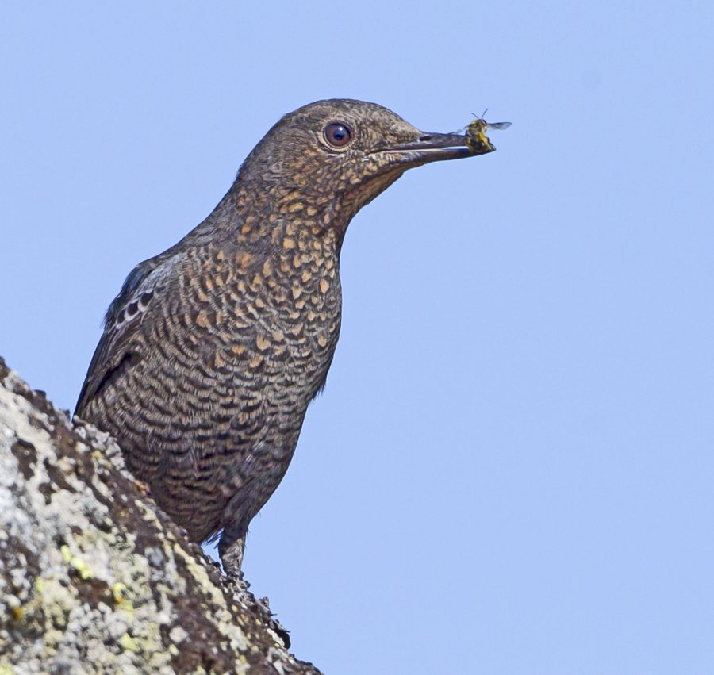

ब्लू रॉक थ्रशBlue Rock Thrush
Monticola solitarius · Muscicapidae · BRD-0310

- Scientific name वैज्ञानिक नाम
- Monticola solitarius (Linnaeus, 1758)
- Family कुल
- Muscicapidae
- Hindi हिंदी
- ब्लू रॉक थ्रश
- Local names स्थानीय नाम
- blue rock thrush, pandoo, shama
- Status here यहाँ की स्थिति
- native
- Movement आवागमन
- Winter visitor
- Known from कहाँ दर्ज
- Others have published records from the Basti–Ayodhya districts बस्ती–अयोध्या के ज़िलों से दूसरों के प्रकाशित अभिलेख
- IUCN IUCN
- LC
- Review समीक्षा
- not yet reviewed
When to look कब देखें
Winter visitor शीतकालीन प्रवासी. Expected mainly in October, November, December, January, February, March. मुख्यतः अक्टूबर, नवंबर, दिसंबर, जनवरी, फ़रवरी, मार्च में अपेक्षित।
Breeds across southern Europe, the Middle East, Central Asia, and the Himalayas; winters in rocky ravines, ancient ruins, brick kilns, and masonry structures across northern India from October through March. All migrants and visitors →
Tell it apart from इनसे अलग पहचानें
ब्लू रॉक थ्रश / Blue Rock Thrush
Monticola solitarius (Linnaeus, 1758) — Muscicapidae
ब्लू रॉक थ्रश — हिमालय और मध्य एशिया की पथरीली चट्टानों से सर्दियों में गंगा के मैदानी इलाकों में प्रवास करने वाला एक शांत, एकांतप्रिय और सुंदर पक्षी है। यह अक्टूबर से मार्च के बीच पुरानी इमारतों, खंडहरों, ईंट-भट्ठों, रेलवे पुलों और नदियों के ऊंचे बीहड़ों या कंकड़ वाले टीलों पर अकेला बैठा दिखाई देता है। नर पक्षी का पूरा शरीर गहरा नीला-सलेटी होता है, जो धूप में बहुत आकर्षक दिखता है, जबकि मादा मटमैली भूरी और सीने पर लहरदार धारियों वाली होती है। यह किसी ऊंची जगह पर बैठकर जमीन पर रेंगने वाले कीड़ों पर नजर रखता है।
Quick Identification त्वरित पहचान
| Feature | Description |
|---|---|
| Habit | Solitary, upright perching flycatcher-thrush of rocky and masonry sites |
| Male Plumage | Entirely deep slaty-blue or indigo-blue, with blackish flight feathers |
| Female Plumage | Slaty-brown above with bluish wash; buffy below with dense dark bars |
| Posture | Erect, thrush-like perching atop exposed rocks, chimneys, or walls |
| Bill | Slender, moderately long, black, slightly curved at tip |
| Movement | Bobs head and flicks tail slowly upon alighting; swift low direct flight |
| Winter Territory | Strictly solitary; defends small feeding territory around ruins or kilns |
Field tip: Look on top of brick-kiln chimneys, derelict temples, old stone bridges, or high kankar bluffs in winter. The male's uniform dusty indigo-blue coloration and solitary sentinel habit perching motionless make it distinctive.
हिंदी:
नर का पूरा शरीर गहरे नीले रंग का होता है, जबकि मादा भूरी और पेट पर धारियों वाली होती है।
यह हमेशा अकेला रहता है और किसी ईंट-भट्ठे, खंडहर या ऊंचे टीले पर सीना तानकर बैठता है।
बैठने के बाद यह अपनी पूंछ को धीरे-धीरे ऊपर-नीचे हिलाता है।
Morphology आकारिकी
Measurements as given by Baker (1924 as Monticola solitaria pandoo):
| Measurement | Range |
|---|---|
| Wing | 115–125 mm (Baker 1924) |
The Blue Rock Thrush is a starling-sized songbird with an upright carriage and a slender bill. In adult males of the subspecies wintering in northern India, the plumage is almost entirely rich dull indigo-blue or slaty-blue. In fresh autumn plumage, the feathers of the underparts exhibit narrow pale buffish margins, which wear off by late winter to reveal uniform unbarred blue plumage.
Females are dull greyish-brown above, faintly washed with powder-blue on the mantle and wings. The chin and throat are dull buffish-white, while the breast, belly, and flanks are closely barred with crescentic dusky-brown marks.
The bill is black and slender. The iris is dark brown. The legs and feet are blackish-brown or black.
Vocalisations. A quiet, solitary bird in winter, it utters a harsh, grating alarm note tuck-tuck or a drawn-out whistling chook. The melodious, flute-like song is reserved for spring territories on rocky cliffs.
हिंदी:
इसके पंखों का फैलाव 115 से 125 मिमी होता है।
चोंच पतली, सीधी और काली होती है जो दरारों से कीड़े निकालने के लिए अनुकूल है।
जाड़ों में यह ज्यादा आवाज नहीं करता, केवल खतरे के समय 'टुक-टुक' जैसी तीखी आवाज निकालता है।
Behaviour & Ecology व्यवहार और पारिस्थितिकी
Monticola solitarius is famed for its solitary habits outside the breeding season. Individual birds establish defined winter feeding territories around suitable structures such as brick kilns, stone ruins, dry ravines, and high river embankments. It defends this territory aggressively against conspecifics and other insectivores.
Its hunting strategy is predominantly sit-and-wait: perching conspicuously on an elevated pinnacle, scanning the surrounding bare ground, and dropping down abruptly to seize prey before flying back to another vantage point. It occasionally flutters against vertical masonry walls to dislodge resting insects.
हिंदी:
यह पक्षी अत्यधिक एकांतप्रिय होता है और अपने इलाके में किसी दूसरे रॉक थ्रश को नहीं आने देता।
यह किसी ऊंचे खंभे या दीवार पर बैठकर जमीन पर नजर रखता है और कीड़ा दिखते ही नीचे झपटता है।
Life Cycle / Phenology जीवन चक्र
Baker (1924, p. 175) records that Monticola solitaria pandoo breeds from late April up to the middle of June at elevations above 6,000 feet in the Himalayas, building a cup nest of moss, twigs, and grass in rock crevices or old masonry walls. In winter it moves into the plains across India, visiting old buildings, ruins, and open stony ground before returning north in spring.
हिंदी:
बेकर (1924) के अनुसार यह अप्रैल के अंत से जून के मध्य तक 6,000 फीट से अधिक ऊंचाई पर चट्टानों और पुरानी दीवारों की दरारों में घोंसला बनाकर अंडे देती है। सर्दियों में यह प्रवास करके उत्तर भारत के खुले मैदानों और पुरानी इमारतों में आती है और वसंत में वापस लौट जाती है।
Host Plants or Prey आहार
The Blue Rock Thrush is a carnivorous invertivore that feeds on a wide range of ground-dwelling and rock-crevice invertebrates:
- Crickets, grasshoppers, and mantises
- Beetles, especially ground beetles (Carabidae) and darkling beetles (Tenebrionidae)
- Centipedes, scorpions, and spiders found in wall crevices
- Small lizards (skinks and geckos) taken opportunistically
- Ripe wild berries of Ziziphus and Lantana sampled in late winter
It captures prey on open ground or directly off vertical brick faces, often beating larger beetles and lizards against stones before swallowing.
हिंदी:
यह झींगुर, टिड्डे, मकड़ियां, बिच्छू, गुबरैले और छोटी छिपकलियां पकड़कर खाता है।
बड़े शिकार को यह पहले पत्थर पर पटककर मारता है और फिर निगलता है।
Predators / Natural Enemies शत्रु
Hawks, owls, and small carnivores take birds of this size. No source opened for this atlas names a specific predator of this species.
हिंदी:
बाज, उल्लू और छोटे मांसाहारी जानवर इस आकार के पक्षियों का शिकार करते हैं। इस एटलस के लिए देखे गए किसी स्रोत में इसके किसी विशिष्ट शिकारी का नाम दर्ज नहीं है।
Agricultural / Human Relevance कृषि प्रासंगिकता
The Blue Rock Thrush feeds on insects, small lizards, and wild berries (Baker 1924, p. 175). It is protected under the Wildlife (Protection) Act, 1972.
हिंदी:
ब्लू रॉक थ्रश कीड़ों, छोटी छिपकलियों और जंगली फलों को खाता है (बेकर 1924)। यह वन्यजीव (संरक्षण) अधिनियम, 1972 के तहत संरक्षित है।
Expected Locally स्थानीय रूप से अपेक्षित
Not a field record. Written from published accounts for eastern Uttar Pradesh. No confirmed local sighting yet — if you have seen it, that is what the atlas needs.
अभी तक स्थानीय पुष्टि नहीं। यह विवरण प्रकाशित स्रोतों से है, किसी अवलोकन से नहीं।
Look around old brick kilns, ancient ruins, abandoned masonry structures, kankar bluffs, and stony riverbanks during the winter months from October to March.
GBIF holds published records from these districts.
A first record would be a photograph of the bird with place and date, sent through the About page.
Distribution वितरण
Global range: Breeds from the Mediterranean basin across southern Europe, North Africa, the Middle East, Central Asia, the Himalayas, and eastern Asia to Japan. Winters in sub-Saharan Africa, the Arabian peninsula, the Indian subcontinent, and Southeast Asia.
Regional status: Uncommon but widespread winter visitor across Uttar Pradesh, occurring wherever ruins, quarries, brick kilns, and steep ravines offer perching points.
हिंदी:
यह भूमध्य सागर से लेकर पूरे मध्य एशिया और हिमालय में पाया जाता है और जाड़ों में भारत के विभिन्न भागों में आता है।
Research Questions शोध प्रश्न
- How do functional brick kilns and abandoned masonry ruins compare as winter territory centers for Monticola solitarius in rural Awadh? / ग्रामीण इलाकों में ईंट-भट्ठे और पुराने खंडहर इस पक्षी के रहने के लिए कितने मुफीद हैं?
- What is the average foraging radius defended by an individual wintering bird in human-modified landscapes?
- What proportion of winter prey biomass in agricultural border zones consists of Orthoptera versus small reptiles? / खेतों के किनारों पर इसके भोजन में टिड्डों और छिपकलियों का कितना अनुपात होता है?
- How does the seasonal cessation of brick manufacturing during the winter influence human disturbance for roosting thrushes?
- Can local high school nature clubs map the presence of wintering rock thrushes on heritage monuments using mobile phone cameras? (A single photo uploaded by a student can pinpoint an active winter territory.)
Similar Species मिलती-जुलती प्रजातियाँ
| Species | How to tell apart | हिंदी | |
|---|---|---|---|
| [[orange_headed_thrush\ | Orange-headed Thrush]] (Geokichla citrina) | Bright orange head and underparts with slaty-blue back; strictly forest floor dweller | नारंगी-सिर कस्तूरी पक्षी |
| [[tickells_thrush\ | Tickell's Thrush]] (Turdus unicolor) | Pale greyish plumage with yellow bill and legs; lacks deep indigo-blue tones; forages in trees and leaf litter | टिकेल का कस्तूरी पक्षी |
Field rule: The entirely slaty-blue plumage of the male, or the heavily barred underside of the female, coupled with its strict association with rocks, kilns, and brick ruins, easily identify the Blue Rock Thrush.
हिंदी:
नारंगी-सिर कस्तूरी पक्षी का सिर नारंगी होता है, जबकि टिकेल थ्रश हल्के सलेटी रंग का होता है; ब्लू रॉक थ्रश का शरीर गहरा नीला होता है और यह हमेशा पत्थर व इमारतों पर बैठता है।
Taxonomy & Classification वर्गीकरण
Original description. Described by Carl Linnaeus in 1758 in the 10th edition of Systema Naturae (vol. 1, p. 170), under the basionym Turdus solitarius. The type locality is the Kingdom of Naples (Italy). Treated as Monticola solitaria by Baker (1924).
Subspecies. Multiple subspecies are recognized; the populations wintering across northern and peninsular India belong predominantly to the eastern race pandoo (Sykes, 1832), characterized by entirely blue underparts in the male.
Family and order placement. Order Passeriformes; family Muscicapidae (Old World flycatchers and chats).
IUCN status rationale. Evaluated as Least Concern (LC) by the IUCN Red List due to an extremely wide geographical breeding range and large global population.
हिंदी:
लिनिअस ने 1758 में इसका वर्णन किया था। यह मस्सिकापिडे कुल का सदस्य है और वैश्विक स्तर पर सुरक्षित है।
Photo Gallery फोटो गैलरी
No photos yet — add field photos to media/species/blue_rock_thrush/ and run node scripts/sync_photos.js.
Photos needed आवश्यक फोटो
- [ ] Adult male perched on brick wall or chimney (ईंट की दीवार पर बैठा नीला नर)
- [ ] Female showing barred underparts on stone ruin (पत्थर पर बैठी मादा)
References संदर्भ
- Linnaeus, C. (1758). Systema Naturae per Regna Tria Naturae, ed. 10, vol. 1. Laurentii Salvii, Holmiae, p. 170 (as Turdus solitarius).
- Baker, E. C. S. (1924). The Fauna of British India, Including Ceylon and Burma. Birds. Vol. 2. Taylor & Francis, London, p. 174 (as Monticola solitaria pandoo).
- Ali, S. & Ripley, S. D. (1987). Compact Handbook of the Birds of India and Pakistan. Oxford University Press, New Delhi.
- Grimmett, R., Inskipp, C. & Inskipp, T. (2011). Birds of the Indian Subcontinent. 2nd ed. Christopher Helm, London.
- BirdLife International (2024). Monticola solitarius. The IUCN Red List of Threatened Species 2024: e.T22708286A264427514.
- GBIF Occurrence Data — Monticola solitarius (Linnaeus, 1758), India (2025).
Source file: species/fauna/birds/blue_rock_thrush.md